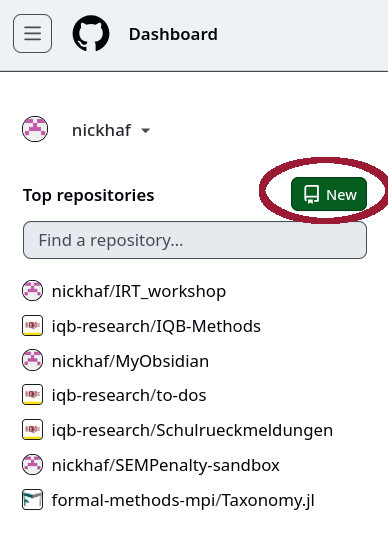
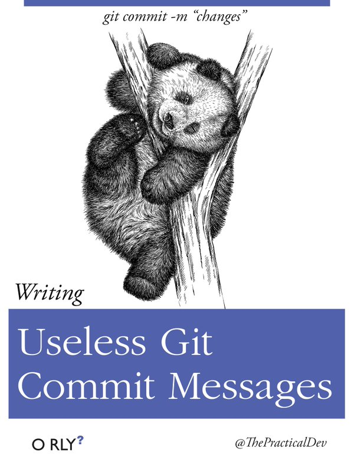
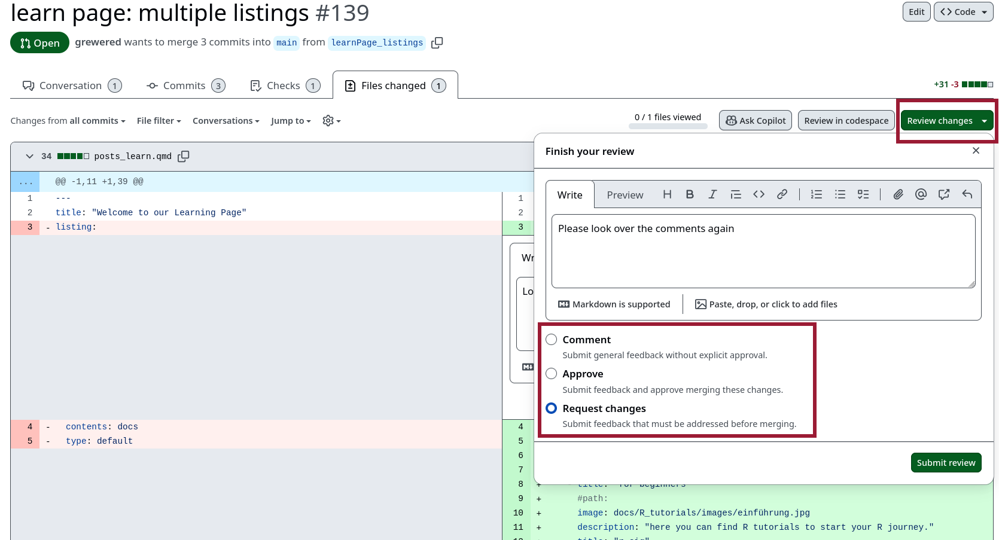

Einführung in Github
Zu diesen Folien
HTML-Folien können durch tippen von e in PDF umgewandelt werden, und dann mit Drucken aus dem Browser abgespeichert werden, falls ihr darin kommentieren wollt.
Roadmap
- Motivation
- Workflow: Alleine
- Workflow: Kollaborativ
Git
- Version Control System
- Entwickelt von Linus Torvalds
- Erlaubt das Tracken von (Plain Text) files:
- Code
- Präsentationen
- Manuskripte
- Webseiten
- …
GitHub
- Onlinedienst für Git-Repositories
- “Soziales Netzwerk” für Git-Nutzende und Entwickler*innen
- Gehört Microsoft.
- Open Source Alternative: GitLab
Warum Git?
Vor Git: Rechner stürzt ab.
Mit Git: Alles liegt online.
Vor Git: Wie dokumentiert man das nachvollziehbar?
Mit Git: Verzahnung von Dokumentation, Diskussion und Code
Vor Git: Wer hat was, wann, warum geändert?
Mit Git: Version Control
Vor Git: Dateibenennung
- Überschreiben von Datein.
- Mit der falschen
final-v10_commented_NH_03.docxweiterarbeiten. - Etwas in Datei X ändern, aber die Änderung in allen abhängingen Datein vergessen (hier hilft uns Quarto auch ungemein).
Mit Git: Version Control - Wiederherstellung jedes Projektstands
Vor Git: Kollaboration über Email
Beim Hin-und Herschicken von Skripten, Texten etc. kommt eventuell mal etwas durcheinander. Und wenn man parallel an einem Skript arbeiten will wird es sehr abspracheintensiv …
Mit Git: Branches
Mit Git: Reviews
Open Source Kollaboration
Science
Workflow
Editoren
- direkt auf GitHub
- Terminal
- GitHub Desktop
- RStudio
- Viele mehr …
Terminal
Ansonsten Windows Powershell/Linux Terminal öffnen, Pfad setzen (z.B. cd C:\Users\hafiznij\Documents\GitHub\IQB-Methods) und dann von dort aus arbeiten.
Visuelle Editoren
Github Desktop
RStudio Integration
RStudio Setup
Tools - Global Options
Diese Integration macht am meisten in der Verbindung mit einem RStudio-Projekt Sinn.
Erste Schritte.
Konfigurieren von Git
Einmalig, in einem Terminal (z.B. das in RStudio, oder Windows Powershell):
git config --global user.name 'Your Name'
git config --global user.email 'your@email.com'Übung
Tu das bitte einmal für deinen GitHub-Username und deine GitHub-email. Checke dann noch einmal ob das geklappt hat:
git config --global user.name
git config --global user.emailEigenes Repository erstellen
Eigenes Repository erstellen

Übung
Erstelle dein erstes eigenes Repository.
Clone/Erster Pull
Clone
git clone url“Herunterladen” des Repositories auf den eigenen Rechner.
In RStudio:
New Project - Version Control - Git
Das hat den Vorteil, dass direkt ein RStudio-Projekt und eine R-spezifische .gitignore Datei erstellt wird.
Clone
Übung
Clone das gerade erstellte Repository. Wenn du nicht RStudio dafür nutzt, erstelle außerdem ein RStudio-Projekt in dem geklonten Ordner (File - New Project - Existing Directory), sowie eine .gitignore Datei mit folgendem Inhalt:
.Rproj.user
.Rhistory
.RData
.RuserdataWichtig
Arbeiten auf Netzlaufwerk kann zu Problemen mit Git führen! Deswegen wirklich immer lokal auf dem eigenen Rechner arbeiten.
Exkurs: Fork
Repository online kopieren. An diesem kann weitergearbeitet werden, als ob es ein eigenes Repository wäre.
Lokales Arbeiten
Lokales Arbeiten
Änderungen im Repository werden lokal auf dem eigenen Rechner vorgenommen.
Übung
Erstelle eine .txt Datei in deinem lokalen Repository-Ordner. Schreibe in die Datei Hello World! und speichere sie ab.
Stage
Stage
git add filenamegit add .Auswählen der Datein, die zum Commit hinzugefügt werden sollen.
Übung
Stage deine gerade bearbeitete Datei, sowie das erstellte RStudio-Projekt und die .gitignore Datei. Ganz sauber wäre es, erst einmal nur die .txt Datei zu stagen, und dann die anderen Datein, um daraus insgesamt zwei Commits zu machen.
Commit
Commit
git commit -m "useful commit message"Speichern der Änderungen, mit kurzer Beschreibung was gemacht wurde (Commit Message).


Übung
Committe deine gerade gestagte Datei mit einer kurzen, prägnanten Commit Message. Wenn du Zwei Commits daraus machen willst, committe erst nur die gestagte .txt Datei, und stage und committe danach die anderen Datein.
Push
Push
git pushHochladen der Commits in das Online-Repository.
Übung
Pushe deinen Commits. Schaue dann im Online-Repository nach, ob die geänderte Datei dort auch erscheint.
Pull
Pull
git pullDamit laden wir die neuesten Änderungen aus dem Online-Repository herunter. Vor allem beim kollaborativen Arbeiten sollte das gemacht werden, bevor man mit der eigenen Arbeit beginnt.
.gitignore
Die .gitignore Datei wird im Repository-Ordner erstellt und enthält Datein, die nicht getrackt werden sollen (z.B. große Datensätze, Hilfsdatein …).
.Rproj.user
.Rhistory
.RData
.RuserdataTipp
Nach Möglichkeit wollen wir vor allem die plain-Text Datein tracken. Wenn wir z.B. mit Quarto arbeiten, wollen wir die .qmd Datein tracken, aber nicht unbedingt die .html Datein, die darus erzeugt werden.
Das wars auch schon!
Na gut, noch nicht ganz. Wir können den Worklow erweitern:
Kollaboratives Arbeiten
Branches
Branches
git checkout -b new_branchHinweis
Vergiss nicht, vor der Erstellung zu pullen, damit die neuste Projekt-Version für Branch genutzt wird.
Branches

Pull Requests/Merge
Pull Requests
Pull Requests
Reviewer, Assignees, Labels
Reviews
Wenn eine Person als Reviewer angefragt wurde, sollte man mit dem Mergen warten, bis das Review abgeschlossen ist.
Reviews
Reviews
Review: Änderungen einarbeiten
Die verlangten Änderungen können direkt auf dem Branch, auf dem die Pull-Request erstellt wurde, vorgenommen werden. Dann committet und pusht man ganz normal, und die Pull-Request wird automatisch geupdated.
Alternativ kann man einen neuen Branch my_branch_2 vom aktuellen Branch my_branch_1 abzweigen:
git checkout -b my_branch_2 my_branch_1… und dann eine neue Pull-Request erstellen.
Issues
Verlinken von Issues und Pull Requests
Jeder Issue und jede Pull-Request hat eine ID. Diese kann genutzt werden, um alles untereinander zu verlinken. Z.B. können Issue-IDs in Commit-Messages vermerkt werden, um automatisch Issues zu schließen:
closes #34Merge
Das ist einfach der Prozess, wenn ein Branch in einen anderen überführt wird. Meistens wird das nach einer angenommenen Pull-Request gemacht, geht aber auch völlig ohne.
Mehrere Leute: Empfehlungen
- Jede*r arbeitet auf eigenen Branches.
- Regelmäßiges mergen: Entweder in
main, oder vonmainpullen und dann in den eigenen Branch mergen:
git checkout my_branch # wechseln auf eigenen branch
git fetch origin # lokal updaten
git merge origin/main # mergen von main in eigenen branch- Reviews sollten möglichst zügig bearbeitet werden, da oft mit dem Review weitergearbeitet werden muss.
- Gemergte Branches löschen, um Ordnung zu halten (lokal und online).
Übung: Kollaboratives Arbeiten
Übung
Einige dich mit der Person neben dir, wer wen zum zu Beginn erstellten Repository einlädt. Tut das dann, sodass ihr eines eurer Repositories zu zweit oder zu dritt bearbeiten könnt.
Tipp
Gehe oben in der Kopfzeile des Repos auf Settings und dann in der Seitenleiste links auf Collaborators and teams. Hier kannst du jetzt den GitHub-Username einer Person zum Repository hinzufügen.
Übung: Clonen
Übung
Clone das Repository (wenn noch nicht geschehen).
Übung: Issues
Übung 1
Erstellt euch gegenseitig einen Issue, den die andere Person dann bearbeiten soll. Das kann so etwas sein wie “Add two numbers” o.ä. Wichtig ist, dass aus der Beschreibung klar wird, was getan werden soll. Assignt die andere Person zu diesem Issue.
Übung 2
Erstelle einen eigenen Branch, auf dem du den dir zugewiesenen Issue in der nächsten Übung bearbeiten wirst.
Übung: Issues
Übung 1
Bearbeite jetzt den dir assignten Issue ersteinmal in einer neuen R-Datei. Erstellt euch also eine neue R-Datei im Repository Ordner und löst den Issue darin.
Übung: Pull-Requests
Übung
Erstelle eine Pull-Request, und wähle die andere Person als Reviewer.
Übung: Review
Übung 2
Arbeite die Änderung, die von dir verlangt wurde, ein und pushe erneut. Nutze dafür einfach den selben Branch, den du vorher für deine Pull-Request verwendet hast. Dadurch wird sie automatisch geupdated. Verlange ein erneutes Review.
Übung 3
Reviewe die Pull-Request der anderen Person erneut. Approve diesmal.
Übung: Merge
Übung 1
Merge deine Pull-Request.
Übung 2
Mist! Dein Reviewer meldet dir zurück, dass es einen Fehler beim Review gab, und das Review bitte rückgängig gemacht werden soll.
Browse das Repository zu dem Commit, der vor dem ersten Review deiner Datei gemacht wurde und schaue in deiner R-Datei nach, was davor drin stand. Theoretisch ließe sich das auch alles über Git-Befehle wiederherstellen, das Browsen reicht uns jetzt aber erst einmal für diese Übung.
Merge-Conflicts
- “Git-Magie” funktioniert wirklich gut.
- Manchmal weiß Git aber nicht, welche von zwei Änderungen aktueller ist: Merge-Conflicts.
- Diese müssen manuell gelöst werden.

Merge-Conflicts lösen
- Klick auf
Resolve conflicts. - Das öffnet, unabhängig vom Editor (z.B. GitHub online, VS Code), einen Texteditor, indem die Datei so bearbeiten werden kann, wie sie am Ende aussehen soll.
- Konflikte sind mit
<<<<<<<,=======und>>>>>>>markiert. Wir können uns entscheiden, welche Änderungen wir behalten wollen. - Die Konflikt-Marker müssen ebenfalls gelöscht werden, sodass die Datei am Ende genauso aussieht, wie sie auch committet werden soll.
- Wenn fertig, klick auf
Mark as resolved. - Committen & Mergen.
Tipps zum Vermeiden von Merge-Conflicts
- Absprachen treffen, wer was bearbeitet. Am einfachsten geht das über den Assign-Button bei Issues und Pull-Requests.
- Regelmaßiges Pullen, um auf dem neusten Stand zu bleiben.
- Regelmäßiges Mergen in den Hauptbranch (z.B.
main, oder eindevelopment-Branch), damit die einzelnen Branches nicht zu sehr divergieren.
Übung
Übung 1
Pullt die Änderungen von main, damit ihr beide auf dem aktuellen Stand seid. Erstellt dann jeweils einen neuen Branch, auf dem ihr jetzt in der gleichen Datei in der gleichen Zeile Änderungen vornehmt. Das wird hoffentlich einen Merge-Conflict erzeugen.
Wenn ihr wollt, könnt ihr danach nochmal tauschen, sodass die andere Person den Merge-Conflict lösen muss.
Wichtig
Denkt daran, dass alles was ihr in GitHub hochladet, auch im Internet landet. Zwar kann man Repositories auf privat stellen, aber Daten oder ähnliches, wie konkrete BT-Ergebnisse oder -Kapitel, die noch nicht veröffentlich wurden, sollte eher auf den Laufwerken belassen.
Workflow Empfehlungen
- Pullen zu Beginn nicht vergessen, vor allem wenn man neue Branches erstellt.
- Lieber eher kleinere Pull-Requests machen. Leichter zu reviewen, einfacher zu mergen und man bleibt enger an der aktuellen Entwicklung dran.
Mainin den eigenen Branch reinmergen, falls man da länger drauf arbeitet. Das erspart später ausufernede Merge-Conflicts.- Möglichst viele thematisch abgetrennte Einheiten committen.
Use Git!
Wendet Git am besten mal auf ein passendes eigenes Projekt an, noch sicherer im Umgang damit zu werden. Es lohnt sich!
Bildquellen
- GitHub: Foto von Roman Synkevych auf Unsplash
- PC: Foto von Julia Joppien auf Unsplash
- Wolke: Foto von Arteum.ro auf Unsplash
- Torvalds: https://commons.wikimedia.org/wiki/File:LinuxCon_Europe_Linus_Torvalds_03_(cropped).jpg
- GitHub Logo: Von GitHub - https://github.com/logos, CC BY 4.0, Link
- Foto von Viktor Forgacs auf Unsplash
- Open: Foto von Viktor Forgacs auf Unsplash
- Babyfeet: Foto von Omar Lopez auf Unsplash
- Fork: Foto von Ursula Gamez auf Unsplash
- Commit message: https://raw.githubusercontent.com/denitdao/o-rly-collection/refs/heads/main/public/book_covers/useless-git-commit-message.jpg
- Ants: Foto von Christian Holzinger auf Unsplash
- rivers: Foto von Muhil Mohan auf Unsplash
- Magic Tree: Foto von Meritt Thomas auf Unsplash